화면 핵심 흐름 · 방향과 예시
알파 점검을 준비하며 답과 출처를 한곳에서 읽을 수 있게 하자는 시안을 만들었습니다. 102장에서 받은 응답을 이용해 장비 A의 질문부터 원문 위치까지 한 화면에 배치합니다.
수업 노트북
실행을 확인한 커널은 Python 3.12.15입니다.
사용자가 볼 결과 카드 만들기
완성 화면 시안 상단에 “장비 A의 점검 전 확인 사항은?”을 두고 그 아래에 “점검 전 전원 표시등을 확인합니다.”라고 씁니다. 바로 아래 ‘근거 문서’ 영역에는 자료명과 페이지·절·개정일·버전을 둡니다. 원문 바로가기 기능을 구현하는 팀은 주소를 문서 목록에서 얻고 해당 절이 열리는지 직접 확인해야 합니다.
셀 01 · 답변과 원문 위치 표시
로컬 예제의 Q01 응답에서 현재 답과 첫 출처를 읽어 화면 카드에 들어갈 문장을 만듭니다.
카드에는 답변과 함께 문서 이름·쪽·절·개정일을 표시합니다. RULE-A는 근거를 다시 찾을 때 쓰는 문서 ID이므로 출처 줄에도 보이게 합니다. model_calls 같은 실행 정보는 개발 기록에 남깁니다.
result = {'status': 'answered',
'answer': '점검 전 전원 표시등을 확인합니다.',
'sources': [{'id': 'RULE-A',
'text': '점검 전 전원 표시등을 확인합니다.',
'source': '가상 장비실 규정 A',
'page': 1,
'section': '2.1',
'revised_on': '2026-11-01',
'version': 'rules-v1'}],
'mode': 'local_rule_fixture',
'model_calls': 0}
source = result["sources"][0]
print(result["answer"])
print(f'근거 문서 · {source["id"]} · {source["source"]} · {source["page"]}쪽 {source["section"]}절')
print(f'개정일 {source["revised_on"]} · {source["version"]}')실행 결과
점검 전 전원 표시등을 확인합니다. 근거 문서 · RULE-A · 가상 장비실 규정 A · 1쪽 2.1절 개정일 2026-11-01 · rules-v1
규정 A, 1쪽 2.1절과 개정일이 답 바로 아래에 보입니다. 줄을 나눠 놓으면 작은 화면에서도 문서 위치와 답의 문장을 따로 읽을 수 있습니다.
새 질문을 보낸 직후의 화면
새 요청이 대기하는 동안 무엇을 지워야 할까요?
응답 대기 중인 화면에 이전 답의 출처가 남아 있는지 보세요.
새 질문이 대기 중이면 이전 출처를 표시하지 않습니다.
시안의 상태 변화 보내기 전에는 질문 입력과 전송을 허용합니다. 보낸 직후에는 “응답을 기다리는 중”과 현재 요청 표식을 보여 주고 이전 답은 과거 대화에 둡니다. 새 응답을 받고 나서야 현재 답과 출처를 넣습니다. 지난 문장을 그대로 둔다면 사용자가 기다리는 중에 그 답을 새 결과로 읽을 수 있습니다.
같은 카드가 달라지는 두 시점

각 화면에서 ‘① 전송 직후 · next-01’와 ‘② 현재 요청의 응답 도착’에 표시되는 내용을 비교하세요.
새 질문이 대기 중일 때는 출처가 비어 있고, 응답이 도착해야 현재 질문의 출처를 표시합니다.
장비 A 점검 전에는?
질문을 보냈습니다. 응답을 기다리는 중입니다.
출처 0건
장비 A 점검 전에는?
점검 전 전원 표시등을 확인합니다.
근거 RULE-A · 가상 장비실 규정 A · 1쪽 2.1절
개정일 2026-11-01 · rules-v1
화면 시안입니다. 왼쪽에는 이전 답의 출처가 없고 오른쪽에는 지금 읽은 절이 답 바로 아래에 나타납니다.
과제 02 · 선택 연습 · 대기 화면 문안
현재 답을 아직 받지 못한 경우를 담아 대기 문구를 만들어 보세요. 앞 질문의 출처를 새 카드에 복사하지 않습니다.
# 현재 요청 ID, 대기 문구, 비어 있는 새 출처 목록을 작성하세요.풀이와 실행 결과 보기
view = {"request_id": "next-01", "message": "질문을 보냈습니다. 응답을 기다리는 중입니다.", "sources": []}
print(view["message"], view["sources"])실행 결과
질문을 보냈습니다. 응답을 기다리는 중입니다. []
지금은 진행 안내와 빈 출처만 보입니다. 팀 화면에서는 이 안내를 어디에 둘지, 단축키나 읽기 도구로도 상태를 알 수 있을지 정할 수 있습니다.
팀 자료로 이어가기
105장에는 완성된 답변 화면과, 보내는 중에는 어떤 항목이 비어 있어야 하는지 넘기세요. 노트북 출력은 화면 문안의 미리보기이며 브라우저에서 버튼을 누른 관찰 기록은 아닙니다.